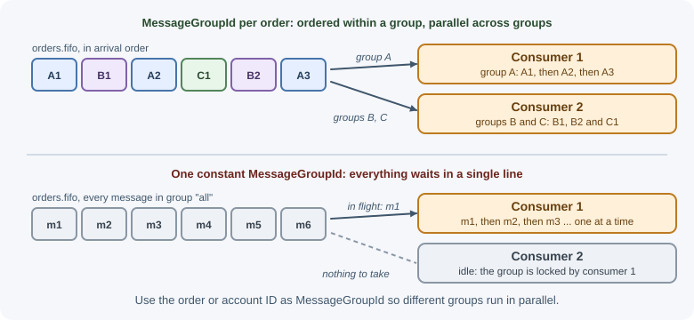
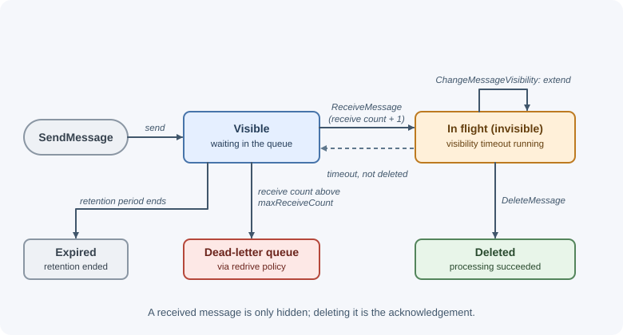
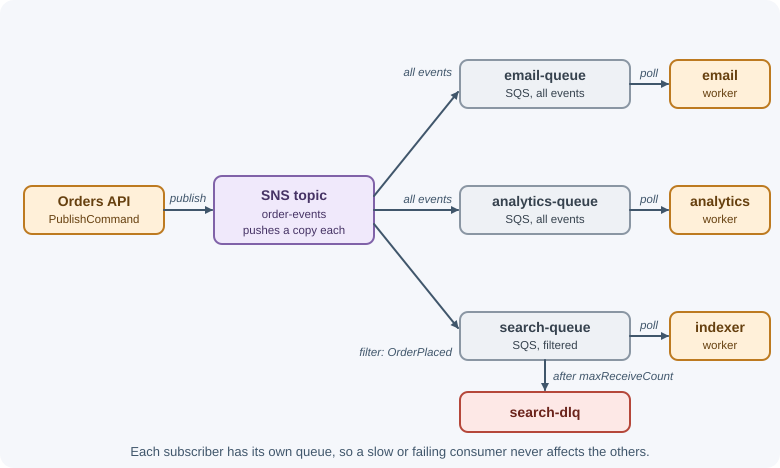

Cloud Queues: SQS and SNS¶
Cloud providers offer fully managed messaging so you never install, patch, or scale a broker. On AWS, Amazon SQS (Simple Queue Service) provides queues and Amazon SNS (Simple Notification Service) provides publish/subscribe topics; together they cover most messaging needs. Google Cloud Pub/Sub and Azure Service Bus offer similar building blocks.
Why it matters¶
- No servers to operate: capacity, replication, and durability are the provider's job. You pay per request.
- Elastic scale: standard queues absorb huge bursts without capacity planning on your side.
- Tight integration with the rest of the platform: serverless functions, IAM permissions, encryption keys, monitoring, and alarms.
- The trade-off: fewer features than a self-hosted broker (limited routing, size limits, per-request pricing) and lock-in to one provider's API.
Real-world usage¶
- AWS Lambda's asynchronous invocations. Lambda itself is built on queues: for an asynchronous invocation it places the event in a queue, returns success immediately, and a separate process reads the queue and runs the function. Invocation records can be sent on to a downstream service such as SQS or EventBridge (AWS Lambda documentation).
- Shuffle-sharded queues inside Lambda. The AWS Builders' Library explains that polling a separate queue per Lambda customer would be too costly, while a single shared queue would let one customer's backlog affect everyone. Lambda instead provisions a fixed number of queues, hashes each customer to a few of them, and enqueues into the shortest one, so a busy customer's backlog stays mostly in its own queues (Avoiding insurmountable queue backlogs).
- Amazon S3 event notifications. S3 can publish events such as "object created" to SNS topics, SQS queues, Lambda functions, and EventBridge, a common way to start processing when files are uploaded (Amazon S3 documentation).
- Spotify on Google Cloud Pub/Sub. When Spotify redesigned its event delivery system in 2016, it chose Cloud Pub/Sub as the transport for all events after struggling to make its Kafka 0.8 setup reliable at its event volumes (Spotify Engineering).
Popular tools and providers: Amazon SQS, SNS, EventBridge, and Kinesis Data Streams; Google Cloud Pub/Sub; Azure Service Bus, Azure Queue Storage, and Azure Event Grid; Kafka-compatible managed services (Amazon MSK, Confluent Cloud) when you need a log rather than a queue.
How it works¶
Amazon SQS basics¶
A producer sends a message to a queue; consumers poll for messages, process them, and delete them. There is no push and no ack call: deleting the message is the acknowledgement.
Producer --SendMessage--> [ SQS queue ] <--ReceiveMessage-- Consumer
<--DeleteMessage--- (after processing)
Every receive returns a receipt handle, a token for that specific delivery. You delete (or change visibility) with the receipt handle, not the message ID, and a new receive of the same message produces a new handle.
Standard vs FIFO queues¶
| Standard queue | FIFO queue | |
|---|---|---|
| Delivery | At least once; occasional duplicates | Duplicates removed within a 5-minute deduplication interval |
| Ordering | Best effort; can arrive out of order | Strict order within each message group |
| Throughput | Nearly unlimited | Limited per queue (higher with batching and high-throughput mode) |
| Name | Any valid name | Must end in .fifo |
| Per-message delay | Supported | Not supported (queue-level delay only) |
| Use when | Order does not matter and consumers are idempotent | Order per entity matters, or duplicate sends must be suppressed |
FIFO concepts:
MessageGroupId: messages with the same group ID are delivered in order, one batch at a time; different groups are processed in parallel. Use an entity ID (an order or account) as the group, never a single constant, or you lose all parallelism.MessageDeduplicationId: if a message with the same deduplication ID was sent within the last five minutes, the new one is accepted but not delivered again. Alternatively enable content-based deduplication, which uses a SHA-256 hash of the body.

Deduplication protects against duplicate sends (for example a producer retry). A consumer that crashes before deleting a message can still process it twice, so keep consumers idempotent.
Visibility timeout¶

When a consumer receives a message, SQS hides it from other consumers for the visibility timeout (default 30 seconds, maximum 12 hours). If the consumer deletes the message in time, it is gone. If not, the message becomes visible again and is redelivered.
- Set the queue's timeout above your normal worst-case processing time.
- For longer jobs, call
ChangeMessageVisibilityperiodically to extend it. - Setting the visibility to 0 makes a message available immediately (a fast "nack").
See delivery guarantees for why this causes duplicates.
Short polling vs long polling¶
- Short polling queries a subset of SQS's servers and returns at once, possibly empty even when messages exist. Many empty responses cost money.
- Long polling (
WaitTimeSecondsup to 20) waits until at least one message arrives or the wait time ends. It reduces empty responses, cost, and latency. Use it, either per request or as the queue default (ReceiveMessageWaitTimeSeconds).
A single receive returns at most 10 messages (MaxNumberOfMessages). Sends
and deletes can also be batched up to 10 per call, which cuts request costs.
Dead-letter queues and the redrive policy¶
A queue's redrive policy names a dead-letter queue and a
maxReceiveCount. Each receive increments the message's receive count;
when it exceeds the maximum without being deleted, SQS moves the message to
the DLQ.
{
"deadLetterTargetArn": "arn:aws:sqs:us-east-1:123456789012:orders-dlq",
"maxReceiveCount": "5"
}
- The DLQ must be the same type as the source (FIFO with FIFO) and in the same account and region.
- Set the DLQ's retention period longer than the source queue's. For standard queues, a message's expiry is based on its original enqueue time, so a short DLQ retention can delete it soon after it arrives.
- After fixing the cause, redrive messages from the DLQ back to the
source queue (from the console or with the
StartMessageMoveTaskAPI). - Alarm on the DLQ's
ApproximateNumberOfMessagesVisiblebeing above zero.
Retention, delays, and size¶
- Retention period: default 4 days, configurable from 60 seconds to 14 days. Unprocessed messages older than this are deleted.
- Delay queues:
DelaySeconds(up to 15 minutes) postpones delivery of new messages. Standard queues also accept a per-message delay (message timers). - Message size: the maximum is 1 MiB (1,048,576 bytes), raised from 256 KiB in August 2025, so older articles quote 256 KiB. For larger payloads, store the data in S3 and send a reference (the claim-check pattern). The Amazon SQS Extended Client Libraries for Java and Python do this automatically, for payloads up to 2 GB. See messaging patterns.
- Message attributes: typed key-value metadata (up to 10 per message), readable without parsing the body.
Integration with AWS Lambda¶
A Lambda function can be configured with an SQS event source mapping: Lambda polls the queue for you, invokes your function with a batch of messages, and deletes them when the function succeeds. If the function fails, the whole batch becomes visible again unless you enable partial batch responses and return only the IDs of the failed messages.
Amazon SNS: topics and fan-out¶
SNS is push-based publish/subscribe. A publisher sends a message to a topic, and SNS delivers a copy to every subscription: SQS queues, Lambda functions, HTTP/HTTPS endpoints, email, SMS, mobile push, and Amazon Data Firehose.
The most common pattern is SNS to SQS fan-out:

Each queue buffers messages for its own consumers, so a slow analytics service never slows email. Adding a new consumer means adding a queue and a subscription; the publisher does not change.
Key features:
-
Subscription filter policies let a subscription receive only matching messages, based on message attributes or the message body:
{ "eventType": ["OrderPlaced", "OrderCancelled"], "total": [{ "numeric": [">=", 1000] }] } -
Raw message delivery: by default SNS wraps the message in a JSON envelope with SNS metadata; enable raw delivery on SQS and HTTP subscriptions to receive the original body.
- Retries and DLQs: SNS retries failed deliveries according to a policy that depends on the endpoint type, and a subscription can have its own dead-letter queue.
- FIFO topics deliver to SQS FIFO queues with ordering and deduplication.
- Permissions: an SQS queue must have a policy allowing the topic to send to it.
SNS does not store messages for later reading. If you need buffering and retries for a consumer, put an SQS queue between SNS and that consumer.
Amazon EventBridge, briefly¶
EventBridge is an event bus. Producers put events on a bus; rules match events by content (event patterns on any field) and route them to targets such as Lambda, SQS, Step Functions, or external HTTP APIs. It also receives events from AWS services and SaaS partners, keeps an optional archive for replay, and includes a scheduler.
| SNS | EventBridge | |
|---|---|---|
| Model | Topics and subscriptions | Event buses and rules |
| Filtering | Filter policies per subscription | Rich content-based patterns per rule |
| Event sources | Your publishers | Your apps, AWS services, SaaS partners |
| Strength | Simple, high-throughput fan-out | Routing many event types across many teams and services |
Google Cloud Pub/Sub, briefly¶
- Topics receive messages; subscriptions deliver them to consumers. Each subscription gets every message (publish/subscribe), and consumers on the same subscription share the work (competing consumers).
- Delivery modes: pull, push to an HTTPS endpoint, and subscriptions that write straight to BigQuery or Cloud Storage.
- Consumers acknowledge within the ack deadline (10 seconds by default, extendable); unacknowledged messages are redelivered.
- Ordering keys give per-key ordering; dead-letter topics catch messages after a maximum number of delivery attempts; an optional exactly-once delivery mode exists for pull subscriptions.
Azure Service Bus, briefly¶
- Queues for point-to-point and topics with subscriptions (with filter rules) for publish/subscribe, inside a namespace.
- Peek-lock mode: a received message is locked while you process it, then you complete, abandon, or dead-letter it. Receive-and-delete mode is at-most-once.
- A built-in dead-letter subqueue per queue and subscription, used after the maximum delivery count (10 by default) or by explicit dead-lettering.
- Sessions give ordered, per-session processing; duplicate detection drops repeated message IDs within a time window; scheduled messages deliver at a future time; transactions span several operations.
Comparison¶
| Amazon SQS | Amazon SNS | Amazon EventBridge | Google Pub/Sub | Azure Service Bus | |
|---|---|---|---|---|---|
| Model | Queue | Pub/sub topic | Event bus + rules | Topic + subscriptions | Queues, topics + subscriptions |
| Delivery | Pull | Push | Push to targets | Pull or push | Pull (peek-lock) |
| Stores messages for consumers | Yes (up to 14 days) | No (retries only) | Optional archive | Yes | Yes |
| Ordering | FIFO queues, per group | FIFO topics | No ordering guarantee | Ordering keys | Sessions |
| Built-in DLQ | Redrive policy | Per subscription | Per target | Dead-letter topics | Dead-letter subqueue |
| Typical role | Work queues, buffering | Fan-out | Cross-service event routing | General messaging on GCP | Enterprise messaging on Azure |
When to use and when not to use¶
Use managed cloud queues when:
- You run on that cloud and want no broker to operate.
- Traffic is bursty and you want capacity to follow it automatically.
- You need simple, reliable work queues (SQS) or fan-out (SNS to SQS).
- You want event routing across many services and AWS events (EventBridge).
- Consumers are serverless functions that the platform polls for you.
Avoid them (or reconsider) when:
- You need replay of past messages or long retention for many readers: use Kafka, Amazon Kinesis, or MSK.
- You need rich broker routing, priorities, or protocols such as MQTT and AMQP: RabbitMQ or Amazon MQ.
- You must stay portable across clouds or run on-premises.
- Messages are large: use object storage with the claim-check pattern.
- Throughput is enormous and per-request pricing would cost more than running your own cluster.
| Need | Amazon SQS | Amazon SNS | Amazon EventBridge | Self-hosted RabbitMQ / Kafka |
|---|---|---|---|---|
| Buffer work for a pool of workers | Best | No (no storage) | No | Yes |
| Fan-out one event to many consumers | With SNS | Best | Yes | Yes |
| Content-based routing across many teams and AWS services | No | Basic filter policies | Best | RabbitMQ topic/headers exchanges |
| Replay | No | No | Archive and replay | Kafka |
| Operations | None | None | None | You run it |
| Portability | AWS only | AWS only | AWS only | Any environment |
Practical examples¶
These use the AWS SDK for JavaScript v3. The client reads the region and credentials from the environment or the instance role; never hard-code keys.
Send messages (standard and FIFO)¶
import { SQSClient, SendMessageCommand } from "@aws-sdk/client-sqs";
const sqs = new SQSClient({});
// Standard queue
await sqs.send(new SendMessageCommand({
QueueUrl: process.env.ORDERS_QUEUE_URL,
MessageBody: JSON.stringify({ type: "OrderPlaced", orderId: "ord_901" }),
MessageAttributes: {
eventType: { DataType: "String", StringValue: "OrderPlaced" },
},
}));
// FIFO queue: ordered per order, duplicates of the same event suppressed
await sqs.send(new SendMessageCommand({
QueueUrl: process.env.ORDER_UPDATES_FIFO_URL, // name ends in .fifo
MessageBody: JSON.stringify({ type: "OrderShipped", orderId: "ord_901" }),
MessageGroupId: "ord_901",
MessageDeduplicationId: "evt_5f2a", // the event's unique ID
}));
A long-polling worker¶
import { SQSClient, ReceiveMessageCommand, DeleteMessageCommand } from "@aws-sdk/client-sqs";
const sqs = new SQSClient({});
const QueueUrl = process.env.ORDERS_QUEUE_URL;
let running = true;
process.on("SIGTERM", () => { running = false; }); // finish the current batch, then stop
while (running) {
const { Messages = [] } = await sqs.send(new ReceiveMessageCommand({
QueueUrl,
MaxNumberOfMessages: 10, // up to 10 per call
WaitTimeSeconds: 20, // long polling
}));
for (const message of Messages) {
try {
const event = JSON.parse(message.Body);
await handleEvent(event); // must be idempotent
await sqs.send(new DeleteMessageCommand({ QueueUrl, ReceiptHandle: message.ReceiptHandle }));
} catch (err) {
// Not deleted: it reappears after the visibility timeout and, after
// maxReceiveCount attempts, moves to the dead-letter queue
console.error("processing failed", { messageId: message.MessageId, err });
}
}
}
async function handleEvent(event) {
console.log("handling", event.type);
}
Publish to an SNS topic for fan-out¶
import { SNSClient, PublishCommand } from "@aws-sdk/client-sns";
const sns = new SNSClient({});
await sns.send(new PublishCommand({
TopicArn: process.env.ORDER_EVENTS_TOPIC_ARN,
Message: JSON.stringify({ type: "OrderPlaced", orderId: "ord_901", total: 4999 }),
// Subscriptions can filter on these attributes
MessageAttributes: {
eventType: { DataType: "String", StringValue: "OrderPlaced" },
},
}));
Each subscribed SQS queue receives its own copy; workers read it with the long-polling loop above.
Best practices¶
- Use long polling and batch sends and deletes.
- Delete only after successful processing, and make consumers idempotent.
- Set the visibility timeout above worst-case processing time; extend it for long jobs.
- Configure a DLQ with a sensible
maxReceiveCounton every queue, with a longer retention than the source, and alarm on its size. - Prefer SNS to SQS fan-out over making one service call many others.
- Choose FIFO only when you need ordering or send-side deduplication, and pick a group ID with enough distinct values for parallelism.
- Keep messages small; use S3 references for large data.
- Grant least-privilege IAM permissions per producer and consumer, and enable server-side encryption.
- Watch
ApproximateAgeOfOldestMessageas well as queue depth: age tells you whether consumers keep up.
In production¶
- The SQS bill is high but traffic is low. Detect: the CloudWatch metric
NumberOfEmptyReceivesis very high. Cause: short polling in a tight loop. Fix: long polling (WaitTimeSecondsup to 20, or the queue'sReceiveMessageWaitTimeSeconds), and batch receives and deletes. - Messages are processed twice. Detect: logs show the same
MessageIdhandled twice; receive counts above 1 on messages that never failed. Cause: the visibility timeout is shorter than processing time (for Lambda consumers, shorter than the function's timeout). Fix: raise the visibility timeout above the worst-case processing time, extend it for long jobs, and keep consumers idempotent. - An SNS subscription receives nothing. Detect: SNS's
NumberOfNotificationsFailedmetric rises, or the queue stays empty while the topic publishes. Cause: the SQS queue policy does not allow the topic to send, or an encrypted queue's KMS key policy does not allow SNS to use the key. Fix: grant the topic permission in the queue policy and the key policy, then test with a published message. - A FIFO queue is slow while workers are idle. Detect:
ApproximateAgeOfOldestMessagekeeps rising but consumers are mostly waiting. Cause: most messages share oneMessageGroupId, so they are processed strictly one after another. Fix: use a group ID per entity (order, account) so groups run in parallel. - The dead-letter queue keeps growing. Detect: an alarm on the DLQ's
ApproximateNumberOfMessagesVisibleabove zero. Cause: a bug or a malformed message type exhaustsmaxReceiveCount. Fix: inspect sample messages, fix the consumer, then redrive them to the source queue (console orStartMessageMoveTask). - A whole Lambda batch is retried for one bad message. Detect: the same messages reappear repeatedly; successful messages are processed again. Cause: the function throws for one message, so the entire batch returns to the queue. Fix: enable partial batch responses and report only the failed message IDs.
Important terminology¶
- SQS standard queue: at-least-once, best-effort ordering, very high throughput.
- SQS FIFO queue: ordered per message group, with deduplication.
- Message group ID: the key within which FIFO order is guaranteed.
- Deduplication ID: a token that suppresses duplicate sends within five minutes.
- Receipt handle: the token identifying one receive of a message, used to delete it.
- Visibility timeout: how long a received message stays hidden.
- Long polling: waiting up to 20 seconds for messages to arrive.
- Redrive policy: the rule that moves messages to a DLQ after
maxReceiveCountreceives. - SNS topic / subscription: a pub/sub channel / an endpoint receiving its messages.
- Filter policy: a rule limiting which messages a subscription receives.
- Fan-out: delivering one message to many independent consumers.
Common mistakes and misconceptions¶
- Short polling in a tight loop, paying for millions of empty responses.
- Deleting a message before processing it, losing work on a crash.
- Visibility timeout shorter than processing time, causing concurrent duplicate processing.
- Using one constant
MessageGroupIdfor a FIFO queue, which serializes everything. - "FIFO means no duplicates ever." Deduplication covers sends within five minutes, not consumer retries.
- DLQ retention shorter than the source queue's, so failed messages expire before anyone looks.
- Subscribing an SQS queue to SNS without a queue policy, so deliveries silently fail.
- Expecting SNS to buffer for slow consumers. Put a queue in between.
Revision questions¶
- How does a consumer acknowledge a message in SQS, and why does it need the receipt handle?
- Compare standard and FIFO queues. What do
MessageGroupIdandMessageDeduplicationIdeach do? - Why should you use long polling?
- Describe the redrive policy and what happens after
maxReceiveCountis exceeded. - Draw the SNS to SQS fan-out pattern and explain why each consumer gets its own queue.
- When would you choose EventBridge over SNS?
Further learning¶
- AWS: Amazon SQS Developer Guide, including FIFO queues and dead-letter queues.
- AWS: Amazon SNS Developer Guide and fan-out to SQS queues.
- AWS: Amazon EventBridge User Guide.
- Google Cloud: Pub/Sub documentation.
- Microsoft: Azure Service Bus messaging documentation.
- Related: AWS overview.